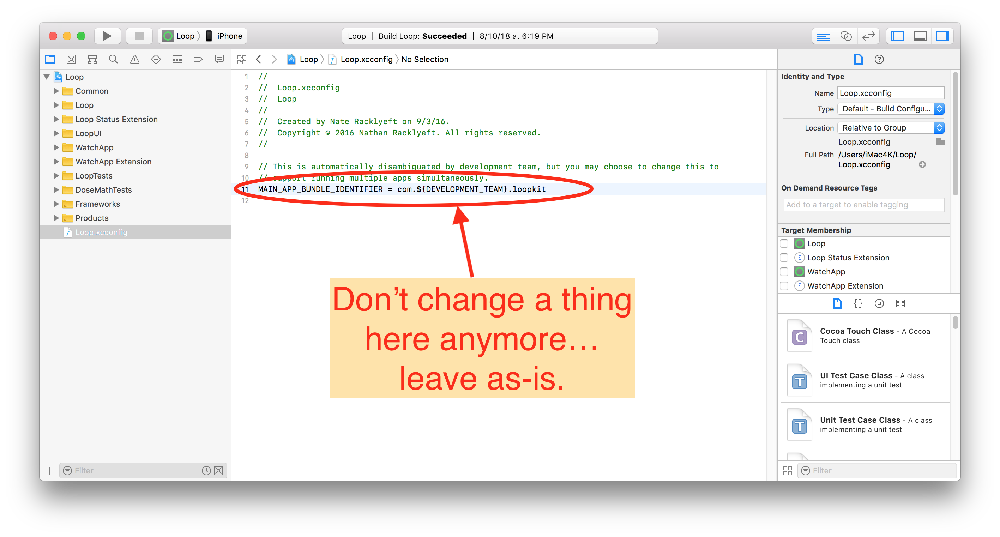
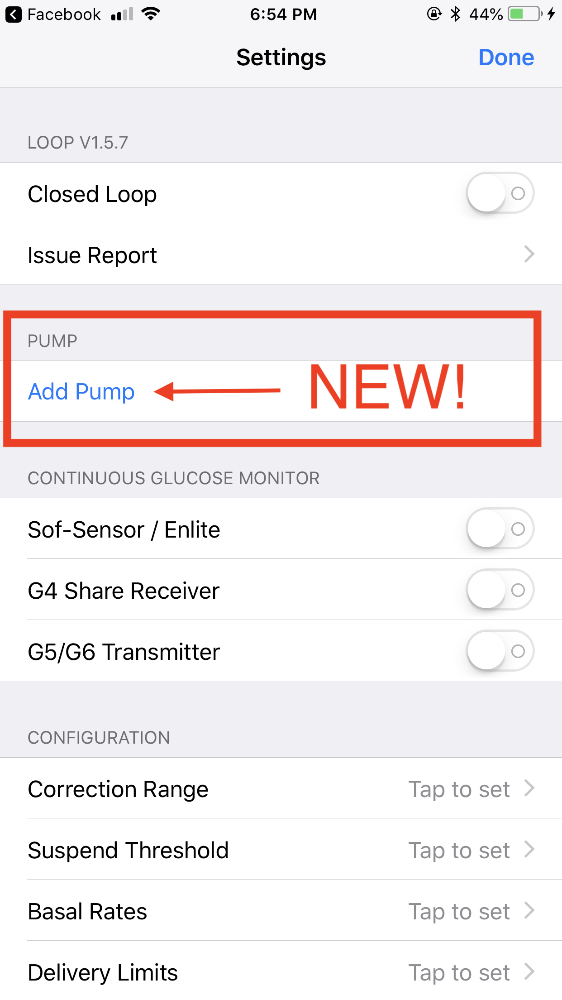

Loop v1.9.3 Features⌁
As always, there is a GitHub page with release notes about the features and changes since the previous Loop release. This page provides a bit more in-depth information and practical tips about the new release.
Minimum OS updates required⌁
Before you start the update process, please make sure you update your devices to the minimum required versions.
- macOS Sierra: macOS 10.3.2 High Sierra
- Xcode: Xcode 9.4
- iPhone: iOS 11.1 at a minimum
- watchOS: watchOS 4.3
Automatic Carthage Installation⌁
The preparation steps to build Loop have changed. Older versions of Loop required the manual installation of Homebrew and Carthage before you began the installation of Loop. Loop v1.9.3 only requires you to install Homebrew, Xcode will automatically install Carthage in the background if it is not already installed on your computer. So if you are building on a new computer and think "Wait, aren't I missing a step in the directions? I thought I had to install Carthage somewhere."...don't worry. You haven't missed a step, Loop is just going to do it for you.

Automatic Main App Bundle ID⌁
Remember how the first step used to be that you had to change the com.loopkit to something unique-to-you? And if you updated you had to remember what you used last time so that your settings remained with the update? No longer.
The Main App Bundle Identifier is now going use your unique development team ID that Apple has assigned using your developer account. You don't have to change anything now. Just leave that as is and go straight to applying any customizations, if you want any. When you sign your targets, Loop will automatically populate all the necessary bundle IDs with the needed information.

This does mean that you will have to re-enter your settings in this new app for initial use, but subesquent rebuilds will be easier because the Main App Bundle Identifier will always be consistent and settings will be saved on updates using this new automated ID.
To prevent any conflicts, please remove your old app from your phone when you are done setting up this new app.
Initial Loop Build Slower⌁
The new Loop will take longer to build than you are used to. You may even be tempted to think that it has glitched out and stopped (it hasn't). This is due to some changes in the way Loop deals with underlying frameworks that Loop builds. BE PATIENT. Depending on the speed of the computer and internet, your initial build could take between 15-40 mins or so. Subsequent builds will be fast again, it is just the first build that will take awhile.
You will see this step take the longest...Building Loop: Cartfile | Running 2 of 2 custom shell scripts Just wait it out. Eventually, Loop will move past that and finish the build.

Initial Pump Setup⌁
You'll notice one of the changes in the update almost immediately when you go to the Loop settings and see an Add Pump prompt.

The new pump setup has pretty self-explanatory steps for setting up your pump in Loop.
Basal Rates and Delivery Limits (save to pump...)⌁
Loop now automatically reads and imports the following settings from the pump during initial setup:
- Basal Rate Schedule
- Delivery Limits (maximum basal rate and maximum bolus)

Even better news? Loop now saves edits to those settings back to the pump. There's a new "Save to pump..." button that must be used after you edit those settings in Loop. If you don't use that button, the edits you make to those Loop settings will not be saved in Loop nor in the pump. Therefore, please confirm the edits have been successfully saved before exiting the basal rates screen. The purpose is to keep Loop and your pump in-snyc. Now if Loop fails for whatever reason, you can be sure that the basal rate in the pump will match what you've been using in your Loop.

Standard Basal Rate Schedule⌁
As mentioned above, Loop now has the ability to read/write your basal rate schedule from/to the pump. There is one important fact about this new (amazing) feature. The code is written to interact with the "Standard" basal rate schedule in the pump only, not the Pattern A/B basal rate schedules. So, practical tip when updating to and using this new Loop app:
- Turn Patterns off on the pump menu and use only the Stanard basal rate schedule.
- Double-check your Standard basal rate schedule is up-to-date
What happens if you accidentally have Pattern A/B active? Loop will be saving any edits you make in the Loop app's basal schedule back to the pump's Standard schedule. In instances where Loop fails or cancels a temp basal, your Loop would fall back to Pattern A/B operation which would not have been updated like you had thought. Therefore, turning Patterns off on the pump will prevent any accidental confusion or mismatch between pump and Loop.
Pump Clock integration⌁
As part of the initial setup, Loop will now automatically prompt you to set your pump's time to exactly match your Loop's time. Additionally, if you forget the warnings and set the pump time manually using the pump's menu, Loop app will now have RileyLink automatically get the pump back in-sync with Loop. Loop will fix your mistake.
As always, you will not have to worry about pump time changes if you travel. You do not have to change your pump's time when you travel, unless you want to. If you decide to, remember to use your Loop to set the pump's time...don't actually use the pump buttons for time changes.

Language Translations⌁
This release includes several new language translations. If the user has their iPhone's language set to one of the following languages, the Loop app will match.

Miscellaneous⌁
Because I know you will ask:
-
The uploading of meterBG checks to NS using pump-linked Contour Next meters is temporarily not working. There is an open ticket to get this restored. We miss our red dots, too.
-
There is no integral retrospective correction (IRC) or new watch face merged into this release. The developers are still working out how/what the best form of those features need to be before potentially merging into a release.
-
Some x15 pumps will get erroneous "Bolus may not have succeeded. Pump responded unexpectedly. Check your pump before retrying" notifications . This is a known issue, even since before the release of v1.9, discussed here. You can read the thread and implement the suggested solution until one has been merged into a Loop release.